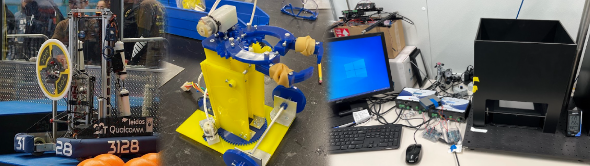

About Me
The Builder
Hello! My name is Colin Huang and I am currently an undergrad majoring in Mechanical Engineering at UCSD specializing in controls and robotics. With my former experience in First Robotics Competition, I am engaging in some exciting work in designing and fabricating practice components and various robot mechanisms for the Triton Robotics team at UCSD.
My education at UCSD has also been crucial in my mastery of engineering software tools such as MATLAB and Fusion 360. I thoroughly enjoyed an upper-division course in computational methods using MATLAB to calculate complex mathematical and physical science problems. Last year, in an engineering design course, I utilized Fusion 360 to perform stress simulations for my team’s final robot project to test the safety factor of components. I look forward to a future in engineering and taking part in the global effort towards sustainability and automation.